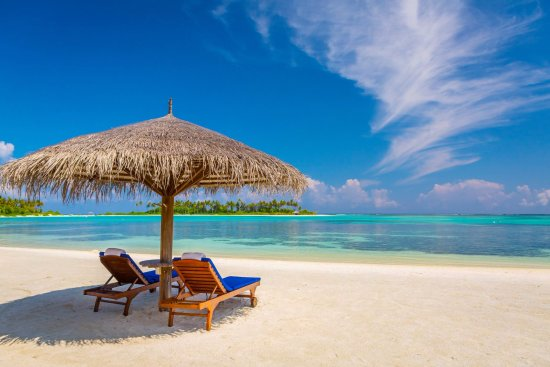

Summer
Summer is the best season!
When displayed the facts, it becomes obvious how much better summer is than winter. Whether it be the freedom to spend your weekends on a sandy beach, or simply be able to leave the house without a jacket, summer always comes out in favour.
Here are some of the best things about summer
- The summer olympics have much better events than the winter Olympics.
- You can eat ice cream whenever you want when it's hot out.
- For students, you get a big 2-4 month break from school and can travel, relax, and work to save money.